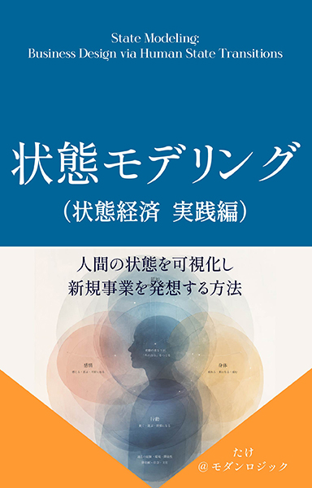

「良いものを作れば売れる」時代は、終わった。
次に必要なのは、人の「状態」を測り、数値で新規事業を発想する技術である。
眠いから、コーヒーを買う。不安だから、保険に入る。人は商品ではなく「状態遷移」を買っている。問題は、この「状態」という曖昧な言葉を、どうやって測り、優先順位をつけ、商品に落とし込むかだった。
本書は、前作『状態経済――人は「状態」にお金を払う』が示した理論を、実際の新規事業開発・商品設計・マーケティングリサーチの現場で使える手順へと落とし込んだ実践書である。人間の状態を可視化するHuman State Balance Sheet（HSBS）、状態ギャップから事業機会を数値化するState Gap Analysis、市場を組み替える状態カテゴリーマネジメント、商品の効き目を測るState Transition Design Score（STDS）、そして大企業・中小企業・個人事業それぞれの実現可能性まで数値化するScalability Simulation Score（SSS）まで、感覚ではなく数値で語るための一連の道具を、明日から使える手順として提示する。
著者：たけ＠モダンロジック ／ Kindle版 ／『状態経済』姉妹編・実践編

こんな感覚、ありませんか？
「体験価値を高めよう」と言われるたび、どこかで感じてきた具体化できなさ。その正体を、あなたはまだ数値にできていないだけかもしれない
新規事業のアイデアが「思いつき」の域を出ず、会議のたびに感覚的な議論で終わってしまう
顧客インサイトを「言葉」でしか語れず、複数のアイデアの優先順位を数値で判断できない
良い商品を作っているつもりなのに、価格・パッケージ・広告のメッセージがどこかブレている
「集中は何点か」のような問いに、毎回感覚だけで答えてしまい、誰が測っても同じ数字にならない
AIをリサーチや新規事業開発にどう組み込めばいいのか、具体的な手順が分からない
事業計画が「良さそう」で止まってしまい、投資判断に必要な金額の言葉に翻訳できない
新規事業を、「ニーズ探し」で考えるか、「状態の数値化」で考えるか
同じ市場でも、顧客の状態を測る物差しを手にした人だけが、感覚を数値に変えて意思決定できる
「ニーズ探し」のまま、次の新規事業を考える（多くの企業がハマる罠）
「良い商品を作れば売れる」という前提から、まだ抜け出せていない
- ✓顧客インサイトを、感覚と経験則だけで判断している
- ✓「集中は何点か」のような問いに、毎回感覚だけで答えてしまっている
- ✓新規事業のアイデアに優先順位をつける、共通の物差しを持っていない
- ✓事業計画が「良さそう」で止まり、投資判断の数字に翻訳できない
「状態」という一段深い構造を、数値で捉え直す（本書のアプローチ）
曖昧な「状態」を、誰が測っても同じ数字になる共通言語に変える
- ✓人間の状態をHSBSという6層の物差しで、0〜100点に数値化する
- ✓状態ギャップ×頻度×困り度×支払意思で、事業機会を数値化する
- ✓Target ProfileとSTDSで、商品の効き目をBefore/Afterで検証する
- ✓SSSで、大企業・中小企業・個人事業それぞれの実現可能性まで数値化する
状態を測る物差し ── Human State Balance Sheet（HSBS）
企業にバランスシートがあるように、人にも「状態の現在地」を一枚で表す仕組みが要る。人間の状態を6つの層で数値化する
身体（Body）
元気、疲労、睡眠、健康感、痛み。すべての層の土台となる層
感情（Emotion）
安心、不安、喜び、孤独、ワクワク。感情の輪を使い、混ざり具合を解像度高く分解する
認知（Cognition）
理解、混乱、集中、判断力、創造性
行動（Behavior）
実行、停滞、習慣、挑戦、継続
社会（Social）
信頼、所属感、承認、影響力、人脈
意味（Purpose）
希望、納得感、生きがい、自己実現、成長実感
「集中は何点か」を感覚で答えず、0点・50点・100点が何を意味するかを先に言葉で定義する「アンカー」を設定する。Current（現状）とDesired（理想）を同時に測ることで、初めてGap（ギャップ）が計算できる。定量調査が難しい個人事業や新規事業でも、たった一人を深く掘る「N1ヒアリング」とAIリサーチの組み合わせで、HSBSは始められる。
事業機会を、感覚ではなく数式で判断する
ギャップが大きくても、事業になるとは限らない。年に一度しか感じない状態や、お金を払うほどではない状態もあるからだ
四つすべてが揃ったとき、そこに大きな市場が生まれる ──『State Modeling（実践編）』第3章より
状態ギャップ
HSBSで測ったCurrentとDesiredの差分。第2章のアンカーで0〜100点に数値化する。
頻度
その状態は、どれくらいの頻度で起こるか。年に1回未満から、1日に何度もまで。
困り度
その状態は、生活や仕事にどれだけ支障をきたすか。
支払意思
その状態を解消するために、お金を払ってでも解決したいと思うか。
算出したOpportunity Scoreは、State Score Cardとして一覧化し、複数のアイデアの優先順位を、感覚ではなく数値で議論できるようにする。
「商品カテゴリー」ではなく、「状態カテゴリー」で市場を見る
コーヒーの競合はコーヒーではない。「眠気から集中へ」という同じ状態遷移を提供するすべての商品・サービスが、競合になる
集中カテゴリー
エナジードリンク、ガム、仮眠サービス、スタンディングデスク、集中できるBGM……業界を問わず、同じ状態遷移を提供する候補が並ぶ。
回復カテゴリー
栄養ドリンク、温泉、マッサージ、睡眠アプリ、ホテル、サプリメント、アロマ、ヨガ、旅行……食品業界の話ではなく、業界横断の市場になる。
安心カテゴリー
保険、健康診断、医療相談アプリ、家計相談、防犯グッズ……金融・医療・住宅設備という異なる業界が、同じ状態カテゴリーで競合する。
本書では、この状態カテゴリーを5つのステップで作る方法、自社の立ち位置を確認する方法、そして売場・EC・AIレコメンドへの実装方法までを具体的に解説する。
「良さそう」で終わらせない。状態遷移を数値で設計し、検証する
目標を数値にしなければ、会議のたびに定義から議論をやり直すことになる。狙った変化を、Before/Afterで実測する
Target Profile
この商品は、HSBSの六層のうち、どこを、どれだけ動かすつもりかを仮決めする
Before/Afterテスト
プロトタイプを10〜20名に使ってもらい、利用前後の状態をHSBSのアンカーで実測する
STDSを算出する
達成率・波及度・一貫性の三つに分解し、次に何を直すべきかを具体的に切り分ける
State Transition Design Score（STDS）── 商品が「状態遷移」を狙いどおりに起こせているかを測る指標
本書ではさらに、AIでテキストデータから状態を抽出しペルソナを自動生成する方法（第6章）、そしてOpportunity ScoreとSTDSを掛け合わせた優先順位マトリクスから、大企業・中小企業・個人事業それぞれの実現可能性を数値化するScalability Simulation Score（SSS）、DCF・感応度分析・モンテカルロ法によって状態スコアを金額に翻訳する方法（第7章）までを、具体的な計算例つきで解説する。
こんな方におすすめです
目次
はじめに・全7章・終章で構成
人は商品を買っているのではない
商品ではなく、状態を買っている／HSBS・State Gap Analysis・状態遷移設計という三つの技術
商品ではなく、状態を買っている
コーヒー、ホテル、ジム、保険に共通する構造／価値とは、状態の移動である／なぜこの視点が競争戦略を変えるのか
状態を測る ── Human State Balance Sheet（HSBS）
六つの層で状態を捉える／数値化の軸とアンカー／測定の5ステップ／N1ヒアリングとAIリサーチ
状態ギャップからインサイトを発見する
事業機会を決める四つの掛け算／State Score Cardで優先順位をつける／ケーススタディ
状態カテゴリーマネジメント
状態で見ると、カテゴリーが変わる／状態カテゴリーの作り方／競争相手の再定義／売場・EC・AIレコメンドへの応用
状態遷移商品を設計する
Target Profile／Before/Afterテスト／State Transition Design Score（STDS）／設計から検証までのプロセス
AIで状態を分析する
テキストデータから状態を抽出する／クラスタリングとペルソナ生成／AIインタビューという新しい調査手法
状態から新規事業をつくる
ワークショップの進め方／優先順位マトリクス／Scalability Simulation Score（SSS）／DCF・感応度分析・モンテカルロ法で金額に翻訳する／組織タイプ別の推奨アプローチ
未来の企業は何を売るのか
状態を理解する企業が、次の市場をつくる
必要なのは、もっと良いアイデアではない。
状態を測り、数値にすることである。
抽象的な思想書ではない。明日から使える手順書である。HSBSで状態を可視化し、State Gap Analysisで事業機会を数値化し、状態カテゴリーマネジメントで競合を再定義し、STDSで商品の効き目を検証し、SSSで実現可能性まで数値化する。読み終えたとき、あなたの手元に残るのは「差別化のアイデア」ではなく、新規事業を発想し、検証し、意思決定者を説得するための一連の道具そのものである。